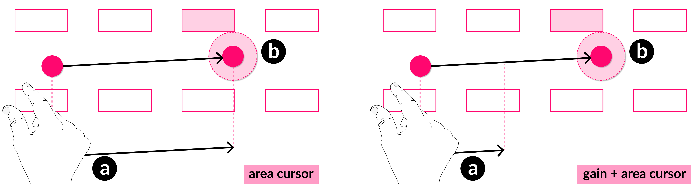

Everything to Gain
Combining Area Cursors with Control-Display Gain for fast, accurate, and low-effort touchless input.

Overview: The Problem & Solution
My previous research proved that area cursors are highly effective for mid-air spatial input, allowing users to navigate effectively without the need for high accuracy.
While area cursors reduce overall hand movement, larger displays still require substantial physical motion. How, then, can the advantages of spatial area cursors be extended to large-display interactions, and how do they perform in dense or cluttered interfaces, such as keyboards or menus, where their benefits may be reduced?
The standard solution for large screens is to increase the Control-Display Gain, making the cursor move further for less hand movement but at a cost of instability and precision.
I hypothesized that these two concepts had a mutually beneficial relationship. The forgiving nature of an area cursor would compensate for the imprecision of high gain, creating an interaction that is fast, accurate, and low-effort, even on large, dense displays.
My Role:
As the lead researcher, I was responsible for the entire project lifecycle:
- Interaction Design: Defining the relationship between proxemic cursors and control display gain.
- Software Prototyping: Building the experiment software using an Ultraleap Stereo IR 170 sensor in Unity game engine.
- User Research: Designing, running, and analysing two separate user studies with a total of 38 participants.
- Data Analysis: Statistically analysing all quantitative data and coding qualitative feedback to derive design recommendations.
- Publication: Writing and publishing the findings at an international conference.
The Process: A Two-Part User Study
I ran two comprehensive experiments to understand the complex relationship between display size, cursor gain, and target density.
- Study 1 (Display Size): Four levels of control display gain (1.0 to 3.5) across four different simulated display sizes (27" to 55"). This helped find the sweet spot for gain on different screens.
- Study 2 (Target Density): The same CDG levels on two display sizes (27" and 55") but added four levels of target density, from sparse to very cluttered. This simulated real-world UIs, like a simple menu vs. a full keyboard.
Users were tested on a variety of tasks and layouts.
- Slider Task: A continuous precision task, used in Experiment 1 to see how gain affected fine motor control.
- Button Selection Task: A standard multi-directional pointing task
- Density (Study 2): Critical for testing how the cursor performed when distractor targets were present.


Outcomes - Implications For UX
It was clear that the forgiving nature of the area cursors allowed users to take advantage of a higher control display gain, moving towards targets faster and with less arm movement. This project provides clear, actionable principles for UX designers creating spatial and touchless interfaces:
- The UX Must Be Context-Aware: The most critical finding is that a one-size-fits-all interaction model for cursor gain will fail. A setting that feels great on a large kiosk display will not work on a desktop monitor. The user experience must be adapted to the physical size of the display. A hard-coded, single-gain value is a recipe for user frustration.
- On Smaller Displays, Prioritise Precision and Control: For desktop-sized displays (~27 inches), the user's primary expectation is precision. A lower, more conservative gain (~1.0 - 1.5) is best. Targets are physically closer, so more precise 1:1 control feels better.
- On Larger Displays, Increase Gain To Combat Fatigue For larger screens, the user wants to feel comfortable. Combining the area cursor with a higher gain value (~2 - 2.5) allows for fast interaction without sacrificing accuracy.
Summary Video
This research was accepted and published at the 2025 CHI Conference on Human Factors in Computing Systems (CHI '25).
Back to all projects